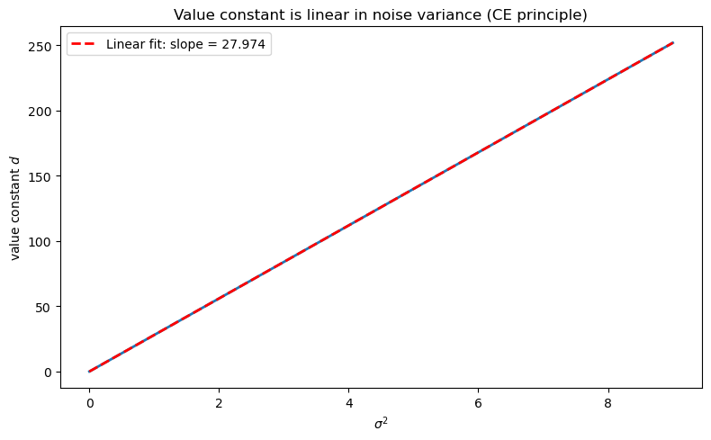

76. Certainty Equivalence#
In addition to what’s in Anaconda, this lecture will need the following libraries:
!pip install quantecon
import numpy as np
import matplotlib.pyplot as plt
from quantecon import LQ
76.1. Overview#
Simon [1956] and Theil [1957] established a celebrated certainty equivalence (CE) property for linear-quadratic (LQ) dynamic programming problems.
Their result justifies a convenient two-step algorithm:
Optimize under perfect foresight (treat future exogenous variables as known).
Forecast – substitute optimal forecasts for the unknown future values.
The striking insight is that these two steps are completely separable.
The decision rule that emerges from step 1 is identical to the decision rule for the original stochastic problem once optimal forecasts are substituted in step 2.
The decision rule does not depend on the variance of the shocks, but the level of the optimal value function does.
After describing the structure of the certainty equivalence property in detail, this lecture describes its role in rational expectations modeling.
We do so by drawing heavily on the introduction to [Lucas and Sargent, 1981].
In addition to learning the certainty equivalence principle, this lecture describes troubles with pre-rational expectations econometric policy evaluation procedures described by [Lucas, 1976].
Note
That volume collected early papers on rational expectations modeling and econometrics.
76.2. A central problem of empirical economics#
To set the stage, Lucas and Sargent [1981] stated the central question for empirical economics that had been posed by Leonid Hurwicz ([Hurwicz, 1962],[Hurwicz, 1966]):
Given observations on an agent’s behavior in a particular economic environment, what can we infer about how that behavior would have differed had the environment been altered?
Note
Hurwicz formulates a notion of ‘causality’ as a context-specific concept that he casts in terms of a well posed decision problem.
This is the problem of policy-invariant structural inference in the following setting.
Observations emerged under one environment or ‘regime’
We want to predict behavior under another ‘regime’
Unless we understand why agents behaved as they did in the historical regime, i.e., their purposes, we can’t predict their behavior under the constraints they face in the new regime.
To confront the problem that Hurwicz had posed, Lucas and Sargent [1981] formulated the following decision framework.
76.3. A formal setup#
Consider a single decision maker whose situation at date \(t\) is fully described by two state variables \((x_t, z_t)\).
The environment \(z_t \in S_1\) is selected by “nature” and evolves exogenously according to
where the innovations \(\{\epsilon_t\}\) are i.i.d. draws from a fixed c.d.f. \(\Phi(\cdot) : \mathcal{E} \to [0,1]\).
The function \(f : S_1 \times \mathcal{E} \to S_1\) is called the decision maker’s environment.
The endogenous state \(x_t \in S_2\) is under partial control of the agent.
Each period the agent selects an action \(u_t \in U\).
A fixed technology \(g : S_1 \times S_2 \times U \to S_2\) governs the transition
The decision rule \(h : S_1 \times S_2 \to U\) maps the agent’s current situation into an action:
The econometrician observes (some or all of) the process \(\{z_t, x_t, u_t\}\), the joint motion of which is determined by (76.1), (76.2), and (76.3).
76.4. Estimated rules are not enough#
Suppose we have estimated \(f\), \(g\), and \(h\) from a long time series generated under a fixed environment \(f_0\).
This gives us \(h_0 = T(f_0)\), where \(T\) is the (unknown) functional mapping environments into optimal decision rules.
But this single estimate, however precise, reveals nothing about how \(T(f)\) varies with \(f\).
Policy evaluation requires knowledge of the entire map \(f \mapsto T(f)\).
Under an environment change \(f_0 \to f_1\), agents will in general revise their decision rules \(h_0 \to h_1 = T(f_1)\), rendering the estimated rule \(h_0\) invalid for forecasting behavior under \(f_1\).
Lucas [1976] and the introduction to [Lucas and Sargent, 1981] conclude that the only nonexperimental path forward is to recover the return function \(V\) from which \(h\) is derived as the solution to an optimization problem, and then re-solve that problem under the counterfactual environment \(f_1\).
76.5. An optimization problem#
Assume the agent selects \(h\) to maximize the expected discounted sum of current-period returns \(V : S_1 \times S_2 \times U \to \mathbb{R}\):
given initial conditions \((z_0, x_0)\), the environment \(f\), and the technology \(g\).
Here \(E_0\{\cdot\}\) denotes expectation conditional on \((z_0, x_0)\) with respect to the distribution of \(\{z_1, z_2, \ldots\}\) induced by (76.1).
In principle, knowledge of \(V\) (together with \(g\) and \(f\)) allows one to compute \(h = T(f)\) theoretically and hence to trace out \(T(f)\) for any counterfactual \(f\).
The essential question is whether \(V\) can itself be recovered from observations on \(\{f, g, h\}\).
Note
The decision rule is in general a functional \(h = T(f, g, V)\). The dependence on \(g\) and \(V\) is suppressed in the main text but made explicit when needed.
76.6. A linear-quadratic DP problem and certainty equivalence#
Progress beyond the level of generality of the previous section requires restricting the primitives.
A productive restriction, exploited in the papers collected in [Lucas and Sargent, 1981], imposes quadratic \(V\) and linear \(g\), which forces \(h\) to be linear.
As part of its computational tractability, this specialization delivers a striking structural result:
76.6.1. Decomposition of \(h\)#
Under quadratic \(V\) and linear \(g\), the optimal decision rule \(h\) decomposes into two components applied in sequence.
Step 1 – Forecasting. Define the infinite sequence of optimal point forecasts of all current and future states of nature:
where \({}_{t+j}z_t^e\) denotes the least-mean-squared-error forecast of \(z_{t+j}\) formed at time \(t\).
The optimal forecast sequence is a (generally nonlinear) function of the current state:
The function \(h_2 : S_1 \to S_1^\infty\) depends entirely on the environment \((f, \Phi)\) and is obtained as the solution to a pure forecasting problem, with no reference to preferences or technology.
Step 2 – Optimization. Given the forecast sequence \(\tilde{z}_t\), the optimal action is a linear function of \(\tilde{z}_t\) and \(x_t\):
The function \(h_1 : S_1^\infty \times S_2 \to U\) depends entirely on preferences \((V)\) and technology \((g)\) but not on the stochastic environment \((f, \Phi)\).
The ultimate decision rule is therefore the composite:
76.6.2. The separation principle#
(76.8) embodies a clean separation of the two sources of dependence in \(h\):
Component |
Depends on |
Independent of |
|---|---|---|
\(h_1\) (optimization) |
\(V\), \(g\) |
\(f\), \(\Phi\) |
\(h_2\) (forecasting) |
\(f\), \(\Phi\) |
\(V\), \(g\) |
Since policy analysis concerns changes in \(f\), and since \(h_1\) is invariant to \(f\), the policy analyst need only re-solve the forecasting problem \(h_2 = S(f)\) under the new environment, keeping \(h_1\) fixed.
The relationship of original interest, \(h = T(f)\), then follows directly from (76.8).
76.6.3. Certainty equivalence and perfect foresight#
The name “certainty equivalence” reflects a further implication of the LQ structure: the function \(h_1\) can be derived as if the agent knew the future path \(z_{t+1}, z_{t+2}, \ldots\) with certainty – i.e., by solving the deterministic problem in which \(\tilde{z}_t\) is treated as the realized path rather than a forecast.
Randomness of the environment affects actions only through the forecast \(\tilde{z}_t\); conditional on \(\tilde{z}_t\), the optimization problem is deterministic.
This means the LQ problem decouples into:
Dynamic optimization under perfect foresight – solve for \(h_1\) from \((V, g)\) by treating \(\tilde{z}_t\) as known, yielding a standard deterministic LQ regulator problem independent of the environment \((f, \Phi)\).
Optimal linear prediction – solve for \(h_2 = S(f)\) from \((f, \Phi)\) using least-squares forecasting theory, which reduces to a standard Kalman/Wiener prediction formula when \(f\) is itself linear.
76.6.4. Cross-equation restrictions#
A hallmark of the rational expectations hypothesis as it appears in this framework is that it ties together what would otherwise be free parameters in different equations.
The requirement that \(\tilde{z}_t = h_2(z_t) = S(f)(z_t)\) – i.e., that agents’ forecasts be optimal with respect to the actual law of motion \(f\) – imposes cross-equation restrictions between the parameters of the forecasting rule \(h_2\) and the parameters of the environment \(f\).
These restrictions, rather than any conditions on distributed lags within a single equation, are the operative empirical content of rational expectations.
Note
This is the message of [Lucas, 1976] and [Sargent, 1981].
The following code verifies the CE principle numerically.
We consider a simple scalar LQ problem:
and vary the noise standard deviation \(\sigma\) across a wide range.
The CE theorem predicts that:
the policy gain \(F\) (the coefficient in \(u_t = -F y_t\)) is independent of \(\sigma\), and
the value constant \(d\) (the additive term in \(V(y) = -y^\top P y - d\)) grows with \(\sigma\).
a, b_coeff = 0.9, 1.0
q, r = 1.0, 1.0
β = 0.95
A = np.array([[a]])
B = np.array([[b_coeff]])
R_mat = np.array([[q]]) # state cost
Q_mat = np.array([[r]]) # control cost
σ_vals = np.linspace(0.0, 3.0, 80)
F_vals, d_vals = [], []
for σ in σ_vals:
C = np.array([[σ]])
lq = LQ(Q_mat, R_mat, A, B, C=C, beta=β)
P, F, d = lq.stationary_values()
F_vals.append(float(F[0, 0]))
d_vals.append(float(d))
fig, axes = plt.subplots(1, 2, figsize=(12, 4))
axes[0].plot(σ_vals, F_vals, lw=2)
axes[0].set_xlabel('noise level $\\sigma$')
axes[0].set_ylabel('policy gain $F$')
axes[0].set_ylim(0, 2 * max(F_vals) + 0.1)
axes[1].plot(σ_vals, d_vals, lw=2, color='darkorange')
axes[1].set_xlabel('noise level $\\sigma$')
axes[1].set_ylabel('value constant $d$')
plt.tight_layout()
plt.show()

Fig. 76.1 CE: policy does not depend on noise#
As the plot confirms, \(F\) (the policy gain) is flat across all noise levels, while the value constant \(d\) increases monotonically with \(\sigma\).
This is the CE principle in action: uncertainty changes the value of the problem but not the optimal decision rule.
76.7. A trouble with ad hoc expectations#
Prior practice, exemplified by the adaptive expectations mechanisms of Friedman [1956] and Cagan [1956], directly postulated a particular form of (76.6):
treating the coefficient \(\lambda\) as a free parameter to be estimated from data, with no reference to the underlying environment \(f\).
The deficiency is not that (76.9) is a distributed lag – linear forecasting rules are perfectly acceptable simplifications.
The deficiency is that the coefficients of the distributed lag are left unrestricted by theory.
The mapping \(h_2 = S(f)\) shows that optimal forecasting coefficients are determined by \(f\): when \(f\) changes, \(h_2\) changes, and so does \(h\).
An estimated \(\lambda\) calibrated under \(f_0\) is therefore non-structural and will give incorrect predictions whenever \(f\) is altered.
This is the econometric content of the critique delivered by Muth [1960].
Rational expectations equates the subjective distribution that agents use in forming \(\tilde{z}_t\) to the objective distribution \(f\) that actually generates the data, thereby closing the model and eliminating free parameters in \(h_2\).
76.8. Exercises#
Exercise 76.1
Using the scalar LQ setup in the code cell above (with \(a = 0.9\), \(b = 1\), \(q = r = 1\), \(\beta = 0.95\)), verify numerically that the value constant \(d\) satisfies \(d \propto \sigma^2\).
Hint: From the CE analysis, the value constant satisfies \(d = \tfrac{\beta}{1-\beta}\,\mathrm{tr}(C^\top P C)\), and since \(C = \sigma\) in the scalar case, this gives \(d = \tfrac{\beta}{1-\beta}\, P\, \sigma^2\).
Confirm that a plot of \(d\) against \(\sigma^2\) is linear and compute the theoretical slope \(\tfrac{\beta}{1-\beta} P\).
Solution
σ_sq_vals = σ_vals ** 2
fig, ax = plt.subplots(figsize=(8, 5))
ax.plot(σ_sq_vals, d_vals, lw=2)
ax.set_xlabel('$\\sigma^2$')
ax.set_ylabel('value constant $d$')
ax.set_title('Value constant is linear in noise variance (CE principle)')
coeffs = np.polyfit(σ_sq_vals, d_vals, 1)
ax.plot(σ_sq_vals, np.polyval(coeffs, σ_sq_vals),
'r--', lw=2, label=f'Linear fit: slope = {coeffs[0]:.3f}')
ax.legend()
plt.tight_layout()
plt.show()
P_scalar = float(LQ(Q_mat, R_mat, A, B, C=np.zeros((1, 1)),
beta=β).stationary_values()[0].item())
theoretical_slope = β / (1 - β) * P_scalar
print(f"Empirical slope: {coeffs[0]:.4f}")
print(f"Theoretical slope β/(1-β)*P = {theoretical_slope:.4f}")

Empirical slope: 27.9740
Theoretical slope β/(1-β)*P = 27.9740
The slope is indeed \(\tfrac{\beta}{1-\beta} P\), confirming the analytic formula.
The value matrix \(P\) is determined entirely by preferences and technology, not by the noise level – a direct consequence of the certainty equivalence principle.
76.9. Concluding remarks#
This sequel certainty equivalence and model uncertainty describes how to extend the certainty equivalence principle to a linear-quadratic setting in which a decision maker distrusts the transition dynamics specified in his baseline model.